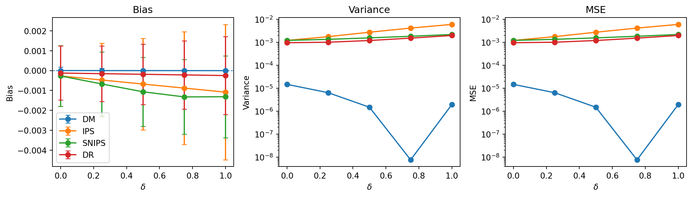

| epsilon | estimator | mean | bias | variance | mse | std | scaled_variance | min | max |
|---|---|---|---|---|---|---|---|---|---|
| 0.3 | DM | 0.660016 | 0.000016 | 0.000002 | 0.000002 | 0.001403 | 0.000394 | 0.655200 | 0.666200 |
| 0.3 | IPS | 0.657402 | -0.002598 | 0.006000 | 0.006007 | 0.077459 | 1.199978 | 0.399048 | 0.953810 |
| 0.3 | SNIPS | 0.657291 | -0.002709 | 0.002164 | 0.002171 | 0.046517 | 0.432772 | 0.465556 | 0.801304 |
| 0.3 | DR | 0.658377 | -0.001623 | 0.001967 | 0.001969 | 0.044346 | 0.393322 | 0.506448 | 0.805581 |
| 0.1 | DM | 0.660003 | 0.000003 | 0.000002 | 0.000002 | 0.001405 | 0.000395 | 0.655200 | 0.666200 |
| 0.1 | IPS | 0.662038 | 0.002038 | 0.022055 | 0.022059 | 0.148508 | 4.410901 | 0.248889 | 1.177778 |
| 0.1 | SNIPS | 0.657443 | -0.002557 | 0.006545 | 0.006551 | 0.080899 | 1.308927 | 0.349275 | 0.875936 |
| 0.1 | DR | 0.659737 | -0.000263 | 0.006029 | 0.006029 | 0.077647 | 1.205801 | 0.382044 | 0.891467 |
| 0.05 | DM | 0.660000 | -0.000000 | 0.000002 | 0.000002 | 0.001408 | 0.000397 | 0.655200 | 0.666200 |
| 0.05 | IPS | 0.659912 | -0.000088 | 0.046347 | 0.046347 | 0.215284 | 9.269478 | 0.122105 | 1.421053 |
| 0.05 | SNIPS | 0.651849 | -0.008151 | 0.013245 | 0.013312 | 0.115088 | 2.649070 | 0.195862 | 0.910714 |
| 0.05 | DR | 0.657595 | -0.002405 | 0.012170 | 0.012175 | 0.110316 | 2.433913 | 0.096274 | 0.992189 |
| 0.02 | DM | 0.660006 | 0.000006 | 0.000002 | 0.000002 | 0.001404 | 0.000394 | 0.655200 | 0.666200 |
| 0.02 | IPS | 0.652283 | -0.007717 | 0.113588 | 0.113648 | 0.337029 | 22.717660 | 0.046939 | 2.056122 |
| 0.02 | SNIPS | 0.639110 | -0.020890 | 0.033821 | 0.034257 | 0.183904 | 6.764147 | 0.050213 | 0.937209 |
| 0.02 | DR | 0.659050 | -0.000950 | 0.027993 | 0.027994 | 0.167312 | 5.598673 | -0.128955 | 1.090845 |
| 0.01 | DM | 0.660004 | 0.000004 | 0.000002 | 0.000002 | 0.001401 | 0.000392 | 0.655200 | 0.666200 |
| 0.01 | IPS | 0.652470 | -0.007530 | 0.235888 | 0.235945 | 0.485683 | 47.177564 | 0.041414 | 2.859596 |
| 0.01 | SNIPS | 0.605422 | -0.054578 | 0.066441 | 0.069420 | 0.257762 | 13.288209 | 0.034657 | 0.954806 |
| 0.01 | DR | 0.662307 | 0.002307 | 0.053939 | 0.053944 | 0.232247 | 10.787759 | -0.532335 | 1.302855 |
Anatomía empírica de estimadores de Offline Policy Evaluation (OPE)
1 Estimadores
Se define el valor de una política \(\pi : \mathcal{X} \to \Delta(\mathcal{A})\) como la recompensa esperada bajo la política \(\pi\): \[ V^{\pi} = \mathbb{E}_{\pi} [R] = \mathbb{E}\left[\sum_a \pi(a|X) \cdot \mu(X,a)\right] \]
donde \(\mu(X,a) := \mathbb{E}[R|X,A=a]\) es la recompensa esperada condicionada al contexto
\(X \in \mathcal{X}\) y a la acción \(A=a\), y \(\Delta(\mathcal{A})\) es el conjunto de distribuciones de probabilidad sobre el espacio de acciones \(\mathcal{A}\).
1.1 DM (Direct Method)
La contribución individual de cada observación al estimador DM del valor de la política objetivo \(\pi\) es: \[ \psi_i^{DM} = \sum_a {\pi (a|X_i) \cdot \hat{\mu} (X_i,a)} \]
donde \(\hat{\mu} (X_i,a)\) es un estimador de la función de valor condicional
\[ \mu (X_i,a) = \mathbb{E}[R|X_i,A_i=a] \]
Así, el estimador DM del valor de la política objetivo \(\pi\) es:
\[ \hat{V}_{DM}^{\pi} \, = \frac{1}{n} \sum_{i=1}^{n} \psi_i^{DM} = \frac{1}{n} \sum_{i=1}^{n} \sum_a {\pi (a|X_i) \cdot \hat{\mu} (X_i,a)} \]
Supuestos:
- \(\hat{\mu}(X_i,a)\) está definido en el soporte de la política objetivo \(\pi\)
El sesgo del estimador DM del valor de la política objetivo \(\pi\) es:
\[ \begin{aligned} Bias_{DM} &= \mathbb{E}\left[\hat{V}_{DM}^{\pi}\right] - V^{\pi} \\ &= \mathbb{E}\left[\frac{1}{n} \sum_{i=1}^{n} \sum_a {\pi (a|X_i) \cdot \hat{\mu} (X_i,a)}\right] - \mathbb{E}_X\left[\sum_a \pi(a|X) \cdot \mu(X,a)\right] \\ &= \frac{1}{n} \sum_{i=1}^{n} \mathbb{E}\left[\sum_a {\pi (a|X_i) \cdot \hat{\mu} (X_i,a)}\right] - \mathbb{E}_X\left[\sum_a \pi(a|X) \cdot \mu(X,a)\right] \\ &= \mathbb{E}_X\left[\sum_a {\pi (a|X) \cdot \hat{\mu} (X,a)}\right] - \mathbb{E}_X\left[\sum_a \pi(a|X) \cdot \mu(X,a)\right] \\ &= \mathbb{E}_X\left[\sum_a {\pi (a|X) \cdot (\hat{\mu} (X,a) - \mu (X,a))}\right] \end{aligned} \]
Así, el sesgo del estimador DM del valor de la política objetivo \(\pi\) es cero si \[ \hat{\mu} (X,a) = \mu (X,a) \] para todo \(a\) en el soporte de la política objetivo \(\pi\).
1.2 IPS (Inverse Propensity Score)
Contribución individual por observación al estimador IPS del valor de la política objetivo \(\pi\): \[ \psi_i^{IPS} = \frac{\pi(A_i|X_i)}{b(A_i|X_i)} \cdot R_i \]
Estimador IPS del valor de la política objetivo \(\pi\): \[ \hat{V}_{IPS}^{\pi} \, = \frac{1}{n} \sum_{i=1}^{n} \psi_i^{IPS} \]
Supuestos:
- Positividad: \(\pi(a|x) > 0 \implies b(a|x) > 0\)
El sesgo del estimador IPS del valor de la política objetivo \(\pi\) es:
\[\begin{aligned} Bias_{IPS} &= \mathbb{E}\left[\hat{V}_{IPS}^{\pi}\right] - V^{\pi} \\ &= \mathbb{E}_X\left[\mathbb{E}\left[\hat{V}_{IPS}^{\pi}|X\right]\right] - \mathbb{E}_X\left[\sum_a \pi(a|X) \cdot \mu(X,a)\right] \\ &= \mathbb{E}_X\left[\mathbb{E}\left[\frac{1}{n} \sum_{i=1}^{n} \frac{\pi(A_i|X)}{b(A_i|X)} \cdot R_i|X\right]\right] - \mathbb{E}_X\left[\sum_a \pi(a|X) \cdot \mu(X,a)\right] \\ &= \mathbb{E}_X\left[\frac{1}{n} \sum_{i=1}^{n} \mathbb{E}\left[\frac{\pi(A_i|X)}{b(A_i|X)} \cdot R_i|X\right]\right] - \mathbb{E}_X\left[\sum_a \pi(a|X) \cdot \mu(X,a)\right] \\ &= \mathbb{E}_X\left[\mathbb{E}\left[\frac{\pi(A|X)}{b(A|X)} \cdot R|X\right]\right] - \mathbb{E}_X\left[\sum_a \pi(a|X) \cdot \mu(X,a)\right] \\ &= \mathbb{E}_X\left[\sum_a P(A=a|X) \cdot \mathbb{E}\left[\frac{\pi(A|X)}{b(A|X)} \cdot R|X, A=a\right]\right] - \mathbb{E}_X\left[\sum_a \pi(a|X) \cdot \mu(X,a)\right] \\ &= \mathbb{E}_X\left[\sum_a b(a|X) \cdot \frac{\pi(a|X)}{b(a|X)} \cdot \mathbb{E}[R|X, A=a]\right] - \mathbb{E}_X\left[\sum_a \pi(a|X) \cdot \mu(X,a)\right] \\ &= \mathbb{E}_X\left[\sum_a \pi(a|X) \cdot \mu(X,a)\right] - \mathbb{E}_X\left[\sum_a \pi(a|X) \cdot \mu(X,a)\right] \\ &= 0 \end{aligned}\]Si no se conoce \(b\), y se estima como \(\hat{b}\), el sesgo del estimador IPS del valor de la política objetivo \(\pi\) es:
\[\begin{aligned} Bias_{IPS} = ... &= \mathbb{E}_X\left[\sum_a b(a|X) \cdot \frac{\pi(a|X)}{\hat{b}(a|X)} \cdot \mathbb{E}[R|X, A=a]\right] - \mathbb{E}_X\left[\sum_a \pi(a|X) \cdot \mu(X,a)\right] \\ &= \mathbb{E}_X\left[\sum_a \pi(a|X) \cdot \frac{b(a|X)}{\hat{b}(a|X)} \cdot \mu(X,a)\right] - \mathbb{E}_X\left[\sum_a \pi(a|X) \cdot \mu(X,a)\right] \\ &= \mathbb{E}_X\left[\sum_a \pi(a|X) \cdot \left(\frac{b(a|X)}{\hat{b}(a|X)} -1\right) \cdot \mu(X,a)\right] \\ \end{aligned}\]con lo cual el sesgo del estimador IPS del valor de la política objetivo \(\pi\) es cero si \[ \frac{b(a|X)}{\hat{b}(a|X)} = 1 \iff \hat{b}(a|X) = b(a|X) \]
para todo \(a\) en el soporte de la política objetivo \(\pi\).
Para hallar su varianza, definimos
\[ Z_i = \frac{\pi(A_i|X_i)}{b(A_i|X_i)} \cdot R_i \]
Entonces
\[ \hat{V}_{IPS}^{\pi} = \frac{1}{n} \sum_{i=1}^{n} Z_i \]
Como las observaciones son i.i.d.,
\[ Var(\hat{V}_{IPS}^{\pi}) = Var\left(\frac{1}{n} \sum_{i=1}^{n} Z_i\right) = \frac{1}{n^2} \sum_{i=1}^{n} Var(Z_i) = \frac{1}{n} Var(Z) \]
Ahora,
\[ Var(Z) = \mathbb{E}[Z^2] - \mathbb{E}[Z]^2 \]
Bajo la logging policy verdadera y la hipótesis de positividad,
\[ \mathbb{E} [Z] = \mathbb{E}\left[\frac{\pi(A|X)}{b(A|X)} \cdot R\right] = V^{\pi} \]
Por tanto, solo hay que calcular \(\mathbb{E} [Z^2]\). Condicionamos primero en X:
\[\begin{aligned} \mathbb{E} [Z^2] &= \mathbb{E}_X\left[\mathbb{E}[Z^2|X]\right] \\ &= \mathbb{E}_X\left[\sum_a P(A=a|X) \cdot \mathbb{E}[Z^2|X, A=a]\right] \\ &= \mathbb{E}_X\left[\sum_a b(a|X) \cdot \mathbb{E}\left[\left(\frac{\pi(A|X)}{b(A|X)} \cdot R\right)^2|X, A=a\right]\right] \\ &= \mathbb{E}_X\left[\sum_a b(a|X) \cdot \frac{\pi(a|X)^2}{b(a|X)^2} \cdot \mathbb{E}[R^2|X, A=a]\right] \\ &= \mathbb{E}_X\left[\sum_a \frac{\pi(a|X)^2}{b(a|X)} \cdot \mathbb{E}[R^2|X, A=a]\right] \end{aligned}\]Por tanto,
\[ Var(\hat{V}_{IPS}^{\pi}) = \frac{1}{N} \left( \mathbb{E}_X\left[\sum_a \frac{\pi(a|X)^2}{b(a|X)} \cdot \mathbb{E}[R^2|X, A=a]\right] - (V^{\pi})^2 \right) \]
Si \(R|X=x, A=a ~ Bernoulli(\mu(x,a))\) (como en nuestro DGP), entonces \(R^2 = R\), y por tanto
\[ \mathbb{E} [R^2|X=x, A=a] = \mathbb{E}[R|X=x, A=a] = \mu(x,a) \]
Entonces:
\[ Var(\hat{V}_{IPS}^{\pi}) = \frac{1}{N} \left( \mathbb{E}_X\left[\sum_a \frac{\pi(a|X)^2}{b(a|X)} \cdot \mu(X,a)\right] - (V^{\pi})^2 \right) \]
1.3 SNIPS (Self-Normalized IPS)
Contribución individual por observación al estimador SNIPS del valor de la política objetivo \(\pi\): \[ \psi_i^{SNIPS} = \frac{W_i \cdot R_i}{\frac{1}{n}\sum_{i=1}^{n} W_i} \quad , \quad W_i \,= \; \frac{\pi(A_i|X_i)}{b(A_i|X_i)} \]
En este caso, el factor de normalización \(\frac{1}{n}\) se cancela en numerador y denominador, y por tanto, el estimador SNIPS del valor de la política objetivo \(\pi\) es:
\[ \hat{V}_{SNIPS}^{\pi} \, = \frac{1}{n} \sum_{i=1}^{n} \psi_i^{SNIPS} = \frac{\sum_{i=1}^{n} W_i R_i}{\sum_{i=1}^{n} W_i} \]
Supuestos:
- Positividad: \(\pi(a|x) > 0 \implies b(a|x) > 0\)
En tal caso, se cumple
\[\begin{aligned} \mathbb{E}\left[\frac{\pi(A|X)}{b(A|X)} | X\right] &= \sum_a P(A=a|X) \cdot \frac{\pi(a|X)}{b(a|X)} \\ &= \sum_a b(a|X) \cdot \frac{\pi(a|X)}{b(a|X)} \\ &= \sum_a \pi(a|X) \\ &= 1 \end{aligned}\]Por tanto,
\[ \mathbb{E}\left[\frac{\pi(A|X)}{b(A|X)}\right] = \mathbb{E}_X\left[\mathbb{E}\left[\frac{\pi(A|X)}{b(A|X)} | X\right]\right] = \mathbb{E}_X[1] = 1 \]
Sin embargo, tanto numerador como denominador del estimador SNIPS son variables aleatorias correlacionadas, y por tanto, en general
\[ \mathbb{E}\left[\frac{\sum_i W_i R_i}{\sum_i W_i}\right] \neq \frac{\mathbb{E}[\sum_i W_i R_i]}{\mathbb{E}[\sum_i W_i]} \]
Además, como
\[ \begin{aligned} \mathbb{E}\left[\sum_i W_i R_i\right] &= n \cdot \mathbb{E}\left[\frac{\pi(A|X)}{b(A|X)} \cdot R\right] \\ &= n \cdot \mathbb{E}\left[\psi^{IPS}\right] \\ &= n \cdot \mathbb{E}\left[\frac{1}{n} \sum_{i=1}^{n} \psi_i^{IPS}\right] \\ &= n \cdot \mathbb{E}\left[\hat{V}_{IPS}^{\pi}\right] \\ &= n \cdot V^{\pi} \end{aligned} \]
y \(\mathbb{E}[\sum_i W_i] = n \cdot \mathbb{E}[\frac{\pi(A|X)}{b(A|X)}] = n\), en general se tiene que
\[ \mathbb{E}\left[\frac{\sum_i W_i R_i}{\sum_i W_i}\right] \neq \frac{\mathbb{E}[\sum_i W_i R_i]}{\mathbb{E}[\sum_i W_i]} = \frac{n \cdot V^{\pi}}{n} = V^{\pi} \]
Por la Ley Débil de los Grandes Números, el estimador SNIPS es consistente, pero en general sesgado:
\[ \frac{1}{n} \sum_{i=1}^{n} W_i R_i \xrightarrow{p} V^{\pi} \]
\[ \frac{1}{n} \sum_{i=1}^{n} W_i \xrightarrow{p} 1 \]
y como el cociente es una función continua, por el Teorema de Slutsky se tiene que
\[ \frac{\frac{1}{n} \sum_{i=1}^{n} W_i R_i}{\frac{1}{n} \sum_{i=1}^{n} W_i} \xrightarrow{p} V^{\pi} \]
1.4 DR (Doubly Robust)
Contribución individual por observación al estimador DR del valor de la política objetivo \(\pi\): \[ \psi_i^{DR} = \frac{\pi(A_i|X_i)}{b(A_i|X_i)} \cdot (R_i - \hat{\mu} (X_i,A_i)) \, + \, \sum_a {\pi (a|X_i) \cdot \hat{\mu} (X_i,a)} \]
Estimador DR del valor de la política objetivo \(\pi\): \[ \hat{V}_{DR}^{\pi} \, = \frac{1}{n} \sum_{i=1}^{n} \psi_i^{DR} \]
Supuestos:
- \(\hat{\mu}(X_i,a)\) está definido en el soporte de la política objetivo \(\pi\)
- Positividad: \(\pi(a|x) > 0 \implies b(a|x) > 0\)
Supuesto desconocido también \(b(a|x)\), y estimado mediante \(\hat{b}(a|x)\), el sesgo del estimador DR del valor de la política objetivo \(\pi\) es:
\[\begin{aligned} Bias_{DR} &= \mathbb{E}\left[\hat{V}_{DR}^{\pi}\right] - V^{\pi} \\ &= \mathbb{E}_X\left[\mathbb{E}\left[\hat{V}_{DR}^{\pi}|X\right]\right] - \mathbb{E}_X \left[\sum_a \pi(a|X) \cdot \mu(X,a)\right] \\ &= \mathbb{E}_X\left[\mathbb{E} \left[\frac{1}{n} \sum_{i=1}^{n} \frac{\pi(A_i|X)}{\hat{b}(A_i|X)} \cdot (R_i - \hat{\mu} (X,A_i)) + \sum_a {\pi (a|X) \cdot \hat{\mu} (X,a)}|X\right]\right] - \mathbb{E}_X\left[\sum_a \pi(a|X) \cdot \mu(X,a)\right] \\ &= \mathbb{E}_X\left[\mathbb{E} \left[\frac{\pi(A|X)}{\hat{b}(A|X)} \cdot (R - \hat{\mu} (X,A)) + \sum_a {\pi (a|X) \cdot \hat{\mu} (X,a)}|X\right]\right] - \mathbb{E}_X\left[\sum_a \pi(a|X) \cdot \mu(X,a)\right] \\ &= \mathbb{E}_X\left[\sum_a P(A=a|X) \cdot \frac{\pi(a|X)}{\hat{b}(a|X)} \cdot\mathbb{E} [ (R - \hat{\mu} (X,a))|X, A=a] + \sum_a {\pi (a|X) \cdot \hat{\mu} (X,a)}\right] - \mathbb{E}_X\left[\sum_a \pi(a|X) \cdot \mu(X,a)\right] \\ &= \mathbb{E}_X\left[\sum_a \pi(a|X) \cdot \frac{b(a|X)}{\hat{b}(a|X)} \cdot (\mu (X,a) - \hat{\mu} (X,a)) + \sum_a {\pi (a|X) \cdot \hat{\mu} (X,a)}\right] - \mathbb{E}_X\left[\sum_a \pi(a|X) \cdot \mu(X,a)\right] \\ &= \mathbb{E}_X\left[\sum_a \pi(a|X) \cdot \frac{b(a|X)}{\hat{b}(a|X)} \cdot (\mu (X,a) - \hat{\mu} (X,a)) + \sum_a {\pi (a|X) \cdot (\hat{\mu} (X,a) - \mu(X,a))}\right] \\ &= \mathbb{E}_X\left[\sum_a \pi(a|X) \cdot (1-\frac{b(a|X)}{\hat{b}(a|X)}) \cdot (\hat{\mu} (X,a) - \mu (X,a) ) \right] \\ \end{aligned}\]Así, el sesgo del estimador DR del valor de la política objetivo \(\pi\) es cero tanto si \[ \hat{\mu} (x,a) = \mu (x,a) \] para todo \(a\) en el soporte de la política objetivo \(\pi\), como si \[ \hat{b}(a|x) = b(a|x) \] para todo \(a\) en el soporte de la política objetivo \(\pi\). De ahí la propiedad de doble robustez.
1.5 Nota
Estas derivaciones se entienden con nuisance models (reward model \(\hat{\mu}\) y logging policy \(\hat{b}\)) fijos o condicionando en nuisance models aprendidos sobre datos independientes. Si se estiman sobre la misma muestra, aparece dependencia.
2 DGP
Para los experimentos de este informe, se define un generador de datos (DGP) con las siguientes características:
Contexto: \(X \in \{0,1\}\), con \(P(X=1)=0.5\)
Recompensa media: \(\mu(X,A) = \mathbb{E}[R|X,A]\), definida como
\[ \mu = \begin{pmatrix} 0.2 & 0.8 \\ 0.7 & 0.4 \end{pmatrix} \]
donde la primera fila corresponde a \(X=0\) y la segunda a \(X=1\), y la primera columna corresponde a \(A=0\) y la segunda a \(A=1\).
Logging policy y target policy: \[ b = \begin{pmatrix} 0.7 & 0.3 \\ 0.3 & 0.7 \end{pmatrix}, \quad \pi = \begin{pmatrix} 0.2 & 0.8 \\ 0.8 & 0.2 \end{pmatrix} \]
Valores exactos: \(V(b) = 0.435, V(π) = 0.66.\)
Salen de aplicar la definición de valor de política a la política de logging y a la target policy, respectivamente.
Validación: El DGP se valida mediante simulación Monte Carlo, generando un dataset con 200,000 observaciones, con el cual se realizan comprobaciones para verificar que el DGP se comporta como se espera: por ejemplo, que valores exactos y simulados coinciden, o que las probabilidades son válidas (no negativas y suman 1).
3 Estudio A - Overlap
3.1 Pregunta
¿Cómo afecta el solapamiento entre la logging policy y la target policy al sesgo, varianza y MSE de los estimadores DM, IPS, SNIPS y DR?
3.2 Diseño
Fijamos el generador de datos DGP y una target policy, y variamos la logging policy para que tome niveles \(\epsilon \in \{0.3, 0.1, 0.05, 0.02, 0.01\}\) de solapamiento con la target policy:
\[ b_\epsilon = \begin{pmatrix} 1 - \epsilon & \epsilon \\ \epsilon & 1 - \epsilon \end{pmatrix} \]
Para cada nivel de solapamiento \(\epsilon\), simulamos R = 2000 réplicas de tamaño muestral N = 200, y calculamos el sesgo, varianza y MSE de los estimadores DM, IPS, SNIPS y DR. Para DM y DR, usamos el reward model oráculo \(\hat{\mu}_{oracle} = \mu\), de forma que el sesgo y la varianza observados aíslan el efecto del overlap sin que interfiera el de un reward model mal especificado.
3.3 Resultados

3.4 Interpretación
Vemos en las gráficas que, al disminuir \(\epsilon\), tanto la varianza como el MSE aumentan para IPS, SNIPS y DR, debido a los importance weights más extremos que se generan al disminuir el solapamiento entre la logging policy y la target policy. Para DM, al usar el reward model oráculo (correcto) y no usar esos pesos, la varianza y el MSE permanecen estables a medida que disminuye \(\epsilon\).
En cambio, no observamos un aumento sistemático del sesgo para DM, IPS y DR: mientras se mantenga la positividad, el deterioro del overlap se manifiesta fundamentalmente como un problema de varianza. SNIPS presenta además su habitual sesgo de muestra finita.
Cabe notar que las estimaciones de IPS y DR en ocasiones llegan a salirse del intervalo \([0,1]\) de posibles valores de la recompensa media, ya que IPS no es una media convexa de recompensas porque sus pesos no están normalizados, y DR añade una corrección residual ponderada que puede ser positiva o negativa. En particular, IPS es muy sensible a la presencia de observaciones con propensiones bajas, que pueden generar pesos muy grandes y, por tanto, estimaciones extremas (se acentúa este efecto a medida que disminuye el overlap).
4 Estudio B - Especificación de los nuisance models
4.1 Pregunta
¿Cómo afecta la misspecification de los nuisance models (reward model \(\hat{\mu}\) y logging policy \(\hat{b}\)) al sesgo, varianza y MSE de los estimadores DM, IPS, SNIPS y DR? ¿Se observa empíricamente la propiedad de doble robustez de DR cuando solo uno de los dos nuisance models está correctamente especificado?
4.2 Diseño
Generamos R = 2000 datasets con N = 200 observaciones cada uno, y registramos para cada dataset los valores estimados de la política objetivo según el estimador. En concreto, estudiamos 10 configuraciones de estimación, que corresponden a DM con reward models correcto (\(\hat{\mu} = \mu\)) e incorrecto (\(\hat{\mu}_{wrong} = 0.5\)), IPS y SNIPS con estimated logging policy correcta (\(\hat{b} = b\)) e incorrecta (\(\hat{b}_{wrong} = 0.5\)), y DR cruzado con
\[ \hat{\mu} \in \{\mu, \hat{\mu}_{wrong}\} \quad , \quad \hat{b} \in \{b, \hat{b}_{wrong}\} \]
Para cada uno, hallamos media, sesgo, varianza, desviación típica, MSE, mínimo y máximo.
Además, interpolamos entre modelo correcto e incorrecto mediante \(\lambda, \gamma \in \{0.0, 0.25, 0.5, 0.75, 1.0\}\) para estudiar DR con más resolución, tomando
\[ \hat{\mu}_{\lambda} = (1-\lambda) \cdot \mu + \lambda \cdot \hat{\mu}_{wrong} \quad , \quad \hat{b}_{\gamma} = (1-\gamma) \cdot b + \gamma \cdot \hat{b}_{wrong} \]
4.3 Resultados
4.3.1 Comparación de estimadores
| Estimator | Mean | Bias | Variance | MSE |
|---|---|---|---|---|
| DM oracle | 0.659999 | -0.000001 | 0.000002 | 0.000002 |
| DM wrong μ | 0.500000 | -0.160000 | 0.000000 | 0.025600 |
| IPS correct b | 0.658917 | -0.001083 | 0.006043 | 0.006044 |
| IPS wrong b | 0.443385 | -0.216615 | 0.002105 | 0.049027 |
| SNIPS correct b | 0.658685 | -0.001315 | 0.002205 | 0.002207 |
| SNIPS wrong b | 0.582954 | -0.077046 | 0.001737 | 0.007674 |
| DR correct μ, correct b | 0.659751 | -0.000249 | 0.001992 | 0.001992 |
| DR correct μ, wrong b | 0.659842 | -0.000158 | 0.000811 | 0.000811 |
| DR wrong μ, correct b | 0.659479 | -0.000521 | 0.002637 | 0.002637 |
| DR wrong μ, wrong b | 0.563668 | -0.096332 | 0.001092 | 0.010372 |
4.3.2 Doble robustez de DR

4.4 Interpretación
En primer lugar, para DM observamos que al pasar de \(\hat{\mu} = \mu\) a \(\hat{\mu} = \hat{\mu}_{wrong}\), el sesgo del estimador aumenta significativamente. A pesar de ello, la varianza del segundo caso es cero, ya que todas las estimaciones son iguales a 0.5, lo cual demuestra que baja varianza no significa que el estimador sea bueno.
Para IPS, al usar \(\hat{b} = \hat{b}_{wrong}\), el sesgo del estimador aumenta significativamente, a pesar de que la varianza llega a disminuir. Esto ocurre porque el estimador está convergiendo al objeto incorrecto, fruto de la misspecification del nuisance model \(\hat{b}\), y no por ruido Monte Carlo.
Para SNIPS, al igual que IPS, al usar \(\hat{b} = \hat{b}_{wrong}\), el sesgo del estimador aumenta significativamente, pero en menor medida que en IPS; en este DGP, la normalización de los importance weights compensa parcialmente el error introducido por la propensity misspecification. Esto es específico de este DGP, no una garantía de robustez de SNIPS frente a misspecification de la logging policy.
Como sabemos, el estimador DR es doblemente robusto, y se ve claramente en la tabla y en el mapa de calor: mientras al menos uno de los dos nuisance models esté correctamente especificado ( \(\lambda = 0 \ \ ó \ \ \gamma = 0\) ) , el sesgo del estimador DR es aproximadamente cero, y cualquier desviación del sesgo se debe a ruido Monte Carlo. Sin embargo, cuando ambos nuisance models están mal especificados, el sesgo del estimador DR aumenta significativamente. Además, en este último caso, el sesgo del estimador DR converge al valor esperado:
\[ \begin{aligned} Bias_{DR} &= \mathbb{E}_X \left[ \sum_a \pi(a|X) \left(1-\frac{b(a|X)}{\hat b(a|X)}\right) \left(\hat\mu(X,a)-\mu(X,a)\right) \right] \\ &= \mathbb{E}_X \left[ \sum_a \pi(a|X) \left(1-\frac{b(a|X)}{0.5}\right) \left(0.5-\mu(X,a)\right) \right] \\ &= \sum_x P(X=x) \left[ \sum_a \pi(a|X=x) \left(1-\frac{b(a|X=x)}{0.5}\right) \left(0.5-\mu(X=x,a)\right) \right] \\ &= 0.5\Bigg[ 0.2\left(1-\frac{0.7}{0.5}\right)(0.5-0.2) + 0.8\left(1-\frac{0.3}{0.5}\right)(0.5-0.8) \\ &\qquad\quad + 0.8\left(1-\frac{0.3}{0.5}\right)(0.5-0.7) + 0.2\left(1-\frac{0.7}{0.5}\right)(0.5-0.4) \Bigg] \\ &= -0.096. \end{aligned} \]
Sin embargo, en el interior de la matriz, donde ambos nuisance models están mal especificados, perdemos la garantía de doble robustez. A medida que nos alejamos de modelos correctos, el sesgo del estimador DR aumenta.
En conclusión, ningún estimador domina universalmente, sino que cada uno pierde su garantía bajo ciertas condiciones: DM pierde la garantía de insesgadez si el reward model está mal especificado, IPS y SNIPS pierden la garantía de consistencia si la logging policy está mal especificada, y DR pierde la garantía de doble robustez si ambos nuisance models están mal especificados.
5 Estudio C - Violación de positividad
5.1 Pregunta
¿Qué pasa si falla la hipótesis de positividad, es decir, si la logging policy no cubre el soporte de la target policy? Si en lugar de tener un solapamiento parcial con \(b(a|x) > 0\) pero pequeño, la logging policy tuviera probabilidad cero (\(b(a|x) = 0\)) de tomar ciertas acciones que la target policy sí toma (\(\pi(a|x) > 0\)), ¿sigue siendo posible estimar el valor de la target policy? Esto es, ¿el valor \(V(\pi)\) de la target policy sigue estando identificado por la distribución observable?
5.2 Diseño
Se genera una logging policy con \(\epsilon = 0\), y dos reward models: uno de ellos,
\[ \mu_1 = \begin{pmatrix} 0.2 & 0.8 \\ 0.7 & 0.4 \end{pmatrix} \]
siendo el que ya teníamos, y el otro,
\[ \mu_2 = \begin{pmatrix} 0.2 & 0.3 \\ 0.9 & 0.4 \end{pmatrix} \]
siendo un reward model que difiere del primero exactamente donde la logging policy tiene probabilidad cero, de forma que la diferencia no es observable a través de los datos generados por el DGP. Estos reward models generan dos “mundos” diferentes, indistinguibles a partir de los datos observables, pero con valores de la target policy diferentes: \(V_1(\pi) = 0.66\) y \(V_2(\pi) = 0.54\). Usamos una única muestra generada por el DGP, compatible con ambos. De hecho, ambos reward models inducen la misma distribución observable de \((X,A,R)\) bajo esta logging policy. Las celdas \((X,A)\) observadas son \((0,0), (1,1)\), mientras que las no observadas son \((0,1), (1,0)\). Así,
\[ \mu_1(0,0) = \mu_2(0,0) \quad , \quad \mu_1(1,1) = \mu_2(1,1) \]
pero difieren en las otras dos.
5.3 Resultados
| World | True target value | IPS | SNIPS |
|---|---|---|---|
| World 1 | 0.660000 | 0.060600 | 0.303000 |
| World 2 | 0.540000 | 0.060600 | 0.303000 |
Los dos reward models tienen valores distintos de la target policy, mientras que IPS y SNIPS, calculados sobre la misma muestra observable, producen necesariamente la misma estimación en ambos mundos.
5.4 Interpretación
Podemos ver que, a pesar de que \(\mu_1\) y \(\mu_2\) son observacionalmente indistinguibles a ojos de la logging policy, tienen \(V(\pi)\) diferentes. Esto se debe a que el verdadero valor de la política se calcula con las propensiones de la target policy, donde \(\mu_1\) y \(\mu_2\) sí se distinguen.
Es más, ningún estimador que solo utilice los logged data puede recuperar \(V(\pi)\), ya que será imposible acceder a información sobre las recompensas de acciones que nunca se llegan a producir, y por tanto ningún estimador basado únicamente en los logged data puede identificar correctamente \(V(\pi)\) de manera uniforme en ambos mundos observacionalmente equivalentes; cualquier estimador producirá la misma distribución de estimaciones en ambos mundos, pese a que sus verdaderos valores de \(V(\pi)\) sean distintos.
Vale la pena comparar este caso de violación de la positividad con el escenario anterior de weak overlap, donde todavía era posible recuperar \(V(\pi)\), a costa de una mayor varianza en la estimación. Se trataba de un problema de varianza, donde ahora el problema que tenemos es de identificación.
Vemos también que tanto IPS como SNIPS devuelven valores finitos, pese a que no se pueda evaluar correctamente la política. Esto no es ninguna casualidad: tanto IPS como SNIPS están estimando el valor del objeto incorrecto. En concreto, IPS está evaluando la contribución de la target policy que cae dentro del soporte de b:
Como dicha masa (no normalizada) de \(\pi\) viene dada por la matriz
\[ \begin{pmatrix} 0.2 & 0.0 \\ 0.0 & 0.2\end{pmatrix} \]
tenemos que equivale a \(\frac{1}{5}\) de la masa de b. Por tanto, en este DGP concreto, como SNIPS normaliza esa masa, SNIPS converge precisamente al valor de b,
\[ V(b_{\epsilon = 0}) = \frac{1}{2}(0.2) + \frac{1}{2}(0.4) = 0.3 \]
Nótese que sigue siendo posible calcular tanto IPS como SNIPS sin división por cero, ya que precisamente nunca se llegan a observar los escenarios donde el denominador se anula.
6 Estudio D - Policy shift
6.1 Pregunta
¿Qué sucedería si, en lugar de variar la logging policy manteniendo la target policy fija, lo hiciéramos al revés? Esto es, ¿cómo afecta la desviación de la target policy respecto de la logging policy al sesgo, varianza y MSE de los estimadores?
6.2 Diseño
Se fija la logging policy \(b\) y la reward function \(\mu\) del DGP, y variamos la target policy como una combinación lineal convexa entre la logging policy y la target policy original del DGP; esto es,
\[ \pi_\delta = (1- \delta)b + \delta \pi \quad , \quad \delta \in \{0,0.25,0.5,0.75,1\} \]
Se toman, además, los nuisance models correctos, R = 2000 réplicas de tamaño muestral N = 200, y el mismo dataset dentro de cada réplica para cada \(\delta\), y
\[ V(\pi_\delta) = 0.435 + 0.225\delta \]
De este modo, \(\delta = 0\) corresponde a la evaluación on-policy \(\pi_\delta = b\), mientras que \(\delta = 1\) recupera la target policy original.
6.3 Resultados
| Delta | Estimator | True value | Mean | Bias | Variance | MSE |
|---|---|---|---|---|---|---|
| 0.000000 | DM | 0.435000 | 0.435002 | 0.000002 | 0.000015 | 0.000015 |
| 0.000000 | IPS | 0.435000 | 0.434730 | -0.000270 | 0.001214 | 0.001214 |
| 0.000000 | SNIPS | 0.435000 | 0.434730 | -0.000270 | 0.001214 | 0.001214 |
| 0.000000 | DR | 0.435000 | 0.434878 | -0.000122 | 0.000964 | 0.000964 |
| 0.250000 | DM | 0.491250 | 0.491251 | 0.000001 | 0.000006 | 0.000006 |
| 0.250000 | IPS | 0.491250 | 0.490777 | -0.000473 | 0.001773 | 0.001773 |
| 0.250000 | SNIPS | 0.491250 | 0.490577 | -0.000673 | 0.001354 | 0.001355 |
| 0.250000 | DR | 0.491250 | 0.491096 | -0.000154 | 0.001015 | 0.001015 |
| 0.500000 | DM | 0.547500 | 0.547501 | 0.000001 | 0.000001 | 0.000001 |
| 0.500000 | IPS | 0.547500 | 0.546823 | -0.000677 | 0.002764 | 0.002764 |
| 0.500000 | SNIPS | 0.547500 | 0.546435 | -0.001065 | 0.001565 | 0.001567 |
| 0.500000 | DR | 0.547500 | 0.547314 | -0.000186 | 0.001203 | 0.001203 |
| 0.750000 | DM | 0.603750 | 0.603750 | -0.000000 | 0.000000 | 0.000000 |
| 0.750000 | IPS | 0.603750 | 0.602870 | -0.000880 | 0.004187 | 0.004188 |
| 0.750000 | SNIPS | 0.603750 | 0.602427 | -0.001323 | 0.001841 | 0.001843 |
| 0.750000 | DR | 0.603750 | 0.603533 | -0.000217 | 0.001529 | 0.001529 |
| 1.000000 | DM | 0.660000 | 0.659999 | -0.000001 | 0.000002 | 0.000002 |
| 1.000000 | IPS | 0.660000 | 0.658917 | -0.001083 | 0.006043 | 0.006044 |
| 1.000000 | SNIPS | 0.660000 | 0.658685 | -0.001315 | 0.002205 | 0.002207 |
| 1.000000 | DR | 0.660000 | 0.659751 | -0.000249 | 0.001992 | 0.001992 |

6.4 Interpretación
Se comprueba que, efectivamente, en \(\delta = 0\), \(\pi_\delta = b\), luego todos los pesos son 1 e IPS y SNIPS coinciden con la media on-policy. A medida que \(\delta\) aumenta, la logging policy permanece fija pero los pesos
\[ w_\delta (x,a) = \frac{\pi_\delta(a|x)}{b(a|x)} \]
se vuelven más dispersos, y por tanto la varianza y el MSE de IPS aumentan fuertemente.
SNIPS amortigua considerablemente ese crecimiento de la varianza en este DGP, a cambio de su sesgo de muestra finita.
DR permanece esencialmente insesgado, pero su varianza también aumenta porque la corrección residual sigue multiplicada por los importance weights.
DM no utiliza importance weighting. Su varianza no sigue la tendencia de IPS/SNIPS/DR: cae hasta aproximadamente \(\delta = 0.75\), y luego aumenta ligeramente. En este DGP esto ocurre porque los valores condicionales
\[ g_\delta(x) = \sum_a \pi_\delta(a|x)\mu(x,a) \]
se vuelven casi iguales entre los dos contextos cerca de ese punto. En particular, DM estima
\[ \hat{V}_{DM}^{\pi_\delta} = \frac{1}{n} \sum_{i=1}^{n} g_\delta(X_i) \]
En nuestro DGP, \(g_\delta(0) = 0.38 + 0.30\delta\) y \(g_\delta(1) = 0.49 + 0.15\delta\).
La diferencia entre contextos es
\[ g_\delta(1) - g_\delta(0) = 0.11 - 0.15\delta \]
y se anula en \(\delta \approx 0.7333\). Justo por eso alrededor de \(\delta = 0.75\), \(g_\delta(X)\) es casi constante independientemente de \(X\), y la varianza Monte Carlo de DM prácticamente desaparece.
Además, el MSE sigue prácticamente a la varianza porque los sesgos son pequeños, salvo que SNIPS añade además un pequeño componente debido a su sesgo de muestra finita.
Aunque el sesgo Monte Carlo observado de IPS y DR se hace progresivamente más negativo, esto no representa un sesgo poblacional creciente: ambos son insesgados bajo las condiciones de este experimento. La forma aproximadamente lineal (exactamente lineal salvo redondeo para IPS y DR) surge porque \(\pi_\delta, V(\pi_\delta)\) y ambos estimadores son lineales en \(\delta\), y se utilizan las mismas réplicas para todos los valores de \(\delta\). Los pequeños sesgos negativos observados son, por tanto, error Monte Carlo.
Conviene hacer una comparación con el Estudio A, donde se variaba la logging policy \(b\) hacia propensiones pequeñas con \(\pi\) fija. Ahora, en cambio, se mantiene \(b\) fija y se desplaza \(\pi\). Ambos muestran que la dispersión de los ratios \(\frac{\pi(a|x)}{b(a|x)}\) es lo que genera el problema de varianza para los estimadores basados en weighting, no simplemente el tener políticas distintas.